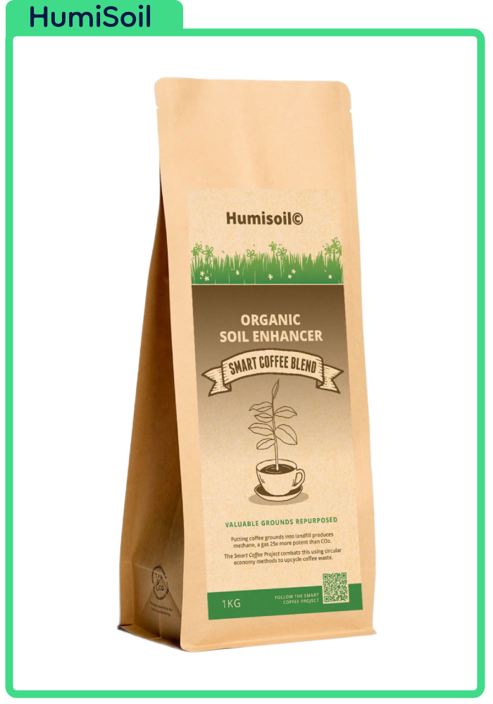

Atlas Soils
Home
Community
Research
Listen
Our Products
Million Coffees Challenge
Connect with Us
☰
Atlas Soils
Welcome to the Grounds to Grounds Initiative:
1,000,000 Coffees Challenge!
Learn More
Get Involved
